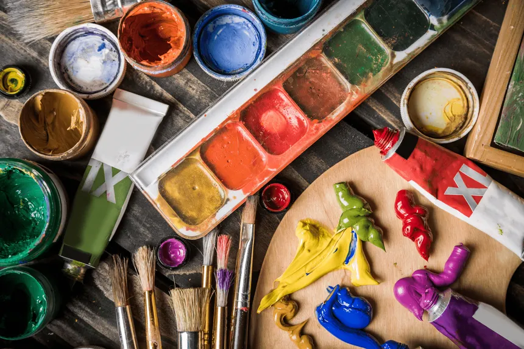
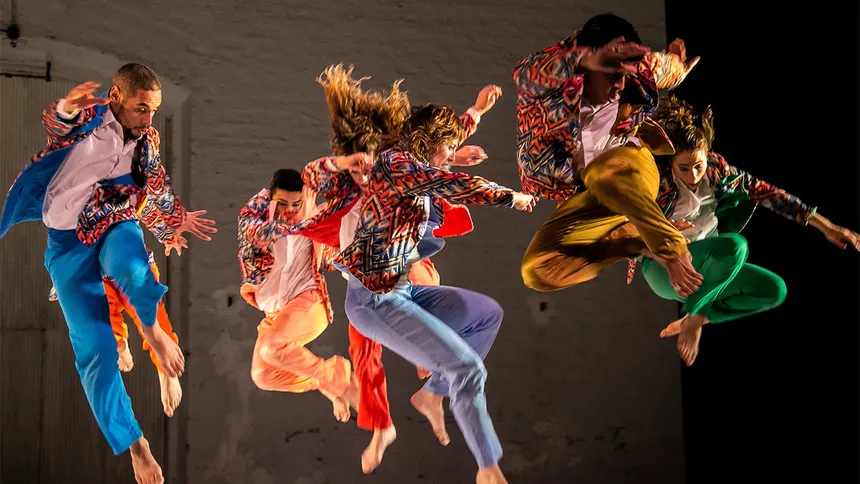
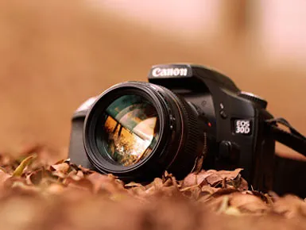
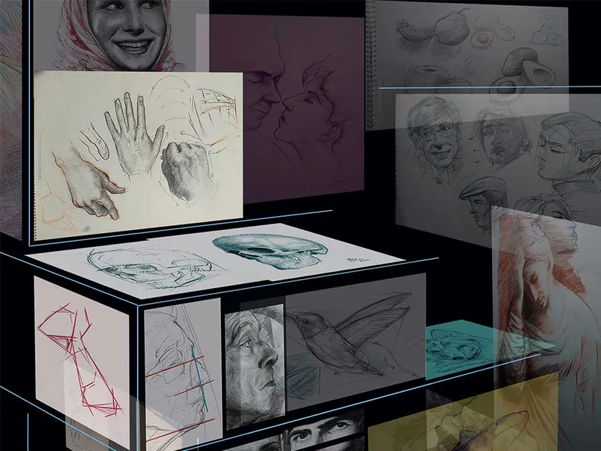
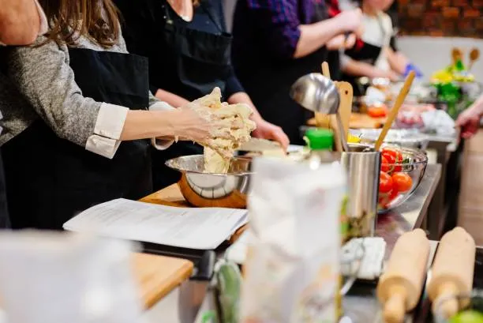
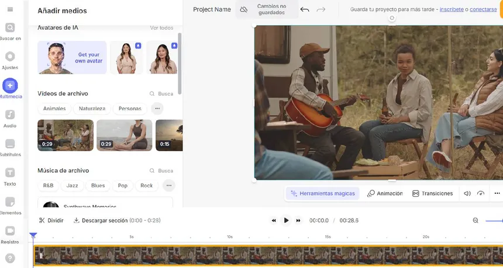
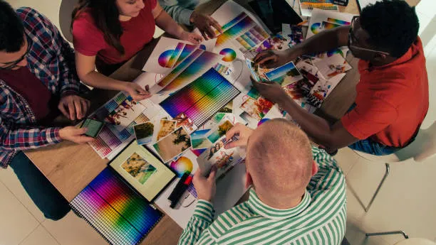
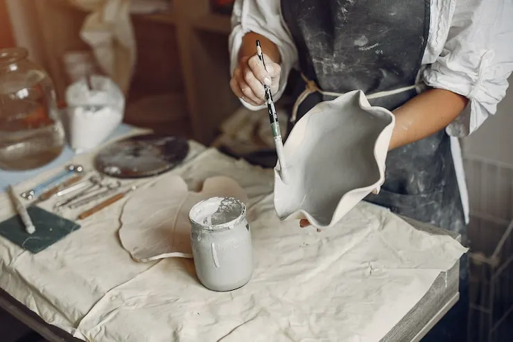
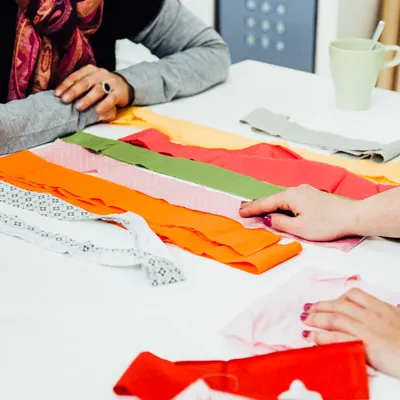

Taller de Pintura
Estos talleres artísticos son espacios diseñados para la experiencia y el aprendizaje de diversas disciplinas, desde técnicas tradicionales como el óleo, la acuarela y el acrílico, hasta medios digitales. Estos encuentros no solo ofrecen instrucción práctica, sino que también integran demostraciones y paneles de discusión que fomentan el intercambio de ideas.
Horario de 14:30 a 16:30
Preinscribirse

Taller de Música
Un taller de música es un entorno dedicado al desarrollo de diversas actividades sonoras, como clases de expresión vocal, audición, música, movimiento y ritmo a través de juegos. Estos espacios representan una oportunidad ideal para profundizar en el conocimiento teórico y perfeccionar las destrezas artísticas de los participantes.
Horario de 18:30 a 21:50
Preinscribirse

Taller de Fotografía
Un taller de fotografía es una formación breve y práctica, diseñada para dominar el manejo de la cámara, perfeccionar la composición y cultivar una visión artística propia, integrando lecciones teóricas con sesiones de toma y edición.
Horario 13:55 a 14:40
Preinscribirse

Taller de Dibujo
Un taller que te enseña a dibujar figuras,personas,animales,etc, aprendes como Dominio del encaje, las proporciones, la perspectiva (para representar 3D en 2D), el claroscuro, la línea y la sombra.
Horario 15:19 a 16:30
Preinscribirse

Taller de Cocina
un taller de cocina es un programa formativo centrado en el aprendizaje de técnicas culinarias y en las costumbres gastronómicas. aunque la mayoria estan diseñados para principiantes y que no tienen experiencia previa.
Horario 17:30 a 18:30
Preinscribirse

Taller de Edición de Video
Un taller de edición de video es una capacitación breve y práctica que enseña a utilizar herramientas digitales para procesar y mejorar piezas audiovisuales, integrando fundamentos teóricos con ejercicios de montaje real.
Horario 11:00 a 12:00
Preinscribirse

Taller de Diseño gráfico
Es un taller que te enseña una disciplina creativa, cuál te permita crear infografías,logos, modificar fotos, escribir posts, publicitar y vender tu producto o servicio, crear una página web, videos o documentales.
Horario 18:20 a 21:30
Preinscribirse

Taller de Cerámica
Es un taller de cerámica es una formación sobre hacer objetos básicos como vasos, platos, jarras y también a texturizar tus obras.
Horario 16:30 a 21:40
Preinscribirse

Taller de Costura y Tejido
Es un taller sobre la costura y tejidos, está te enseñará a seleccionar telas adecuadas, diseño de ropa, a coser y usar máquinas de coser.
Horario 19:30 a 20:40
Preinscribirse